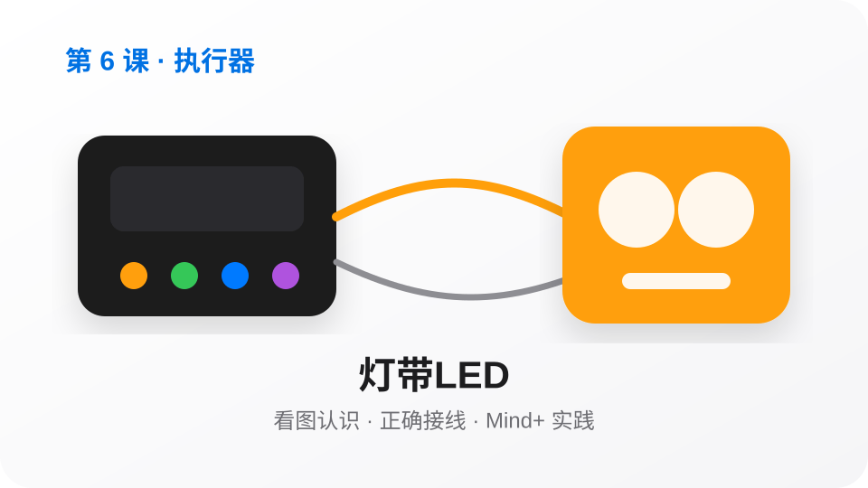
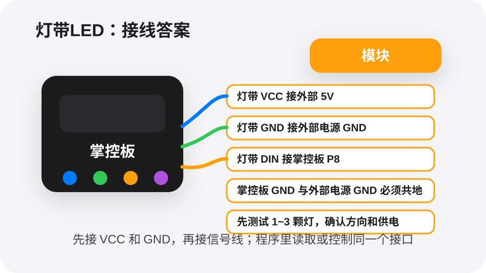

点亮一种颜色。
先控制灯带显示一种固定颜色。
接线答案
灯带 VCC 接 5V，GND 接 GND
DIN 接 P8，掌控板和灯带共地
Mind+可视化程序答案
当掌控板启动
初始化灯带：接口 P8，灯数 8
设置所有灯为红色
显示灯带颜色
屏幕显示「红灯已亮」
今天我们学习一个能让作品更聪明的小模块。目标不是背知识，而是做出能看见、会判断、能行动的小作品。

红灯表示危险、绿灯表示通过，灯带可以让作品用颜色说话。
LED从小指示灯发展到彩色灯带，能让作品用颜色表达心情和状态。
灯带和LED能显示颜色、闪烁和流水效果，让作品更有表现力。
灯带电流较大，灯多时不要只靠掌控板供电。外部电源和掌控板必须 GND 共地，否则信号不稳定。
接线和程序接口必须一致。先跑最小测试，再做完整任务。

LED收到控制信号后改变颜色或亮灭。多个LED排成一条，就能做出流水灯、警示灯和状态灯。
先控制灯带显示一种固定颜色。
让灯带按顺序亮起来，形成动画效果。
用 P0 上的传感器数值决定灯带颜色。
挑战：设计一个“状态灯语言”。红色表示停止，绿色表示通过，蓝色表示等待，黄色表示警告，并做一个按钮切换状态的小演示。